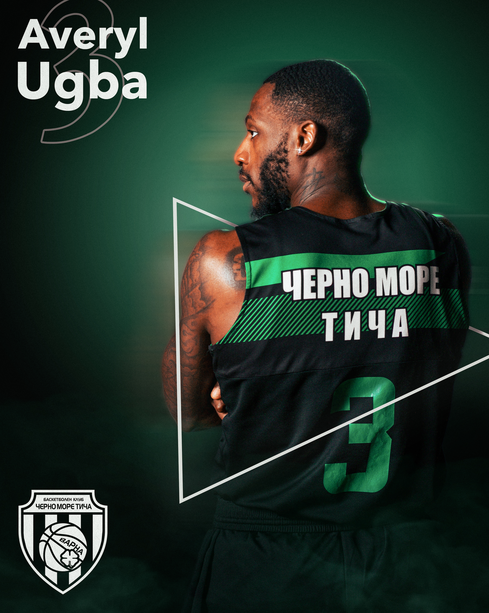
01
PROJECT OVERVIEW
BC Cherno More Ticha
Basketball
in motion.
Content and visual communication created for BC Cherno More Ticha, covering player features, matchday campaigns, competition graphics, social media content and promotional materials.
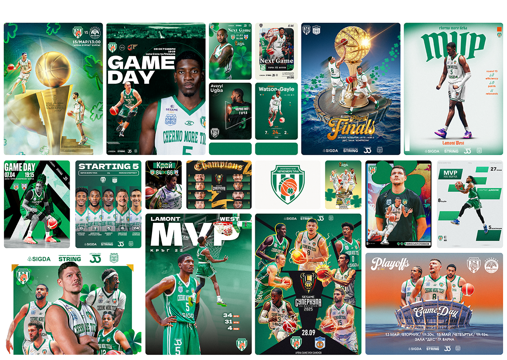
02
CONTENT & VISUAL COMMUNICATION
Working within the club's existing identity, the work focused on translating the energy of basketball into a consistent stream of digital content. Player portraits, matchday graphics, competition campaigns and social posts were developed for different moments throughout the season.
01
Player Content
02
Matchday Graphics
03
Social Media
04
Campaign Posters
05
Competition Content
04
MATCHDAY
Built for
game day.
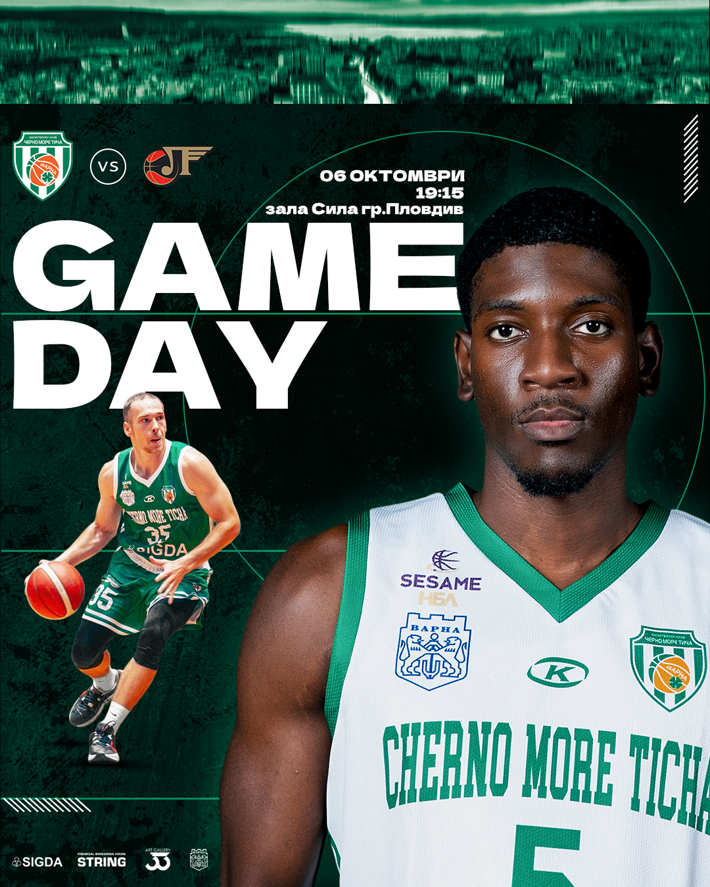
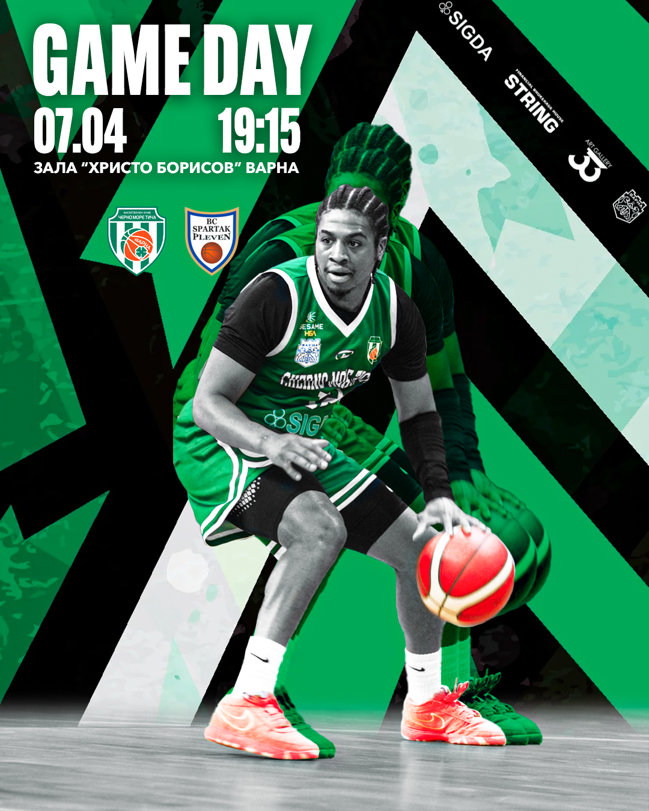
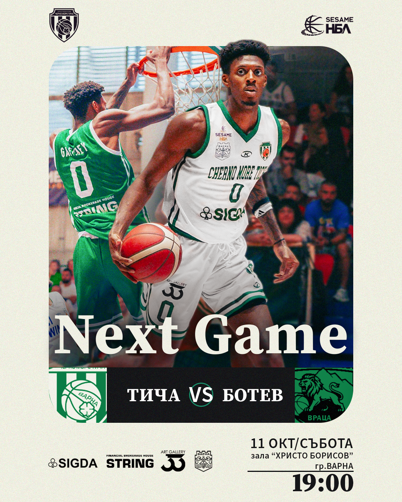
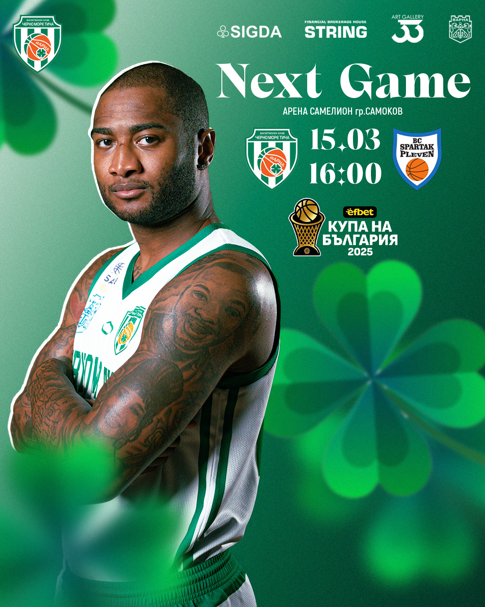
05
THE BIG MOMENTS
Cups.
Finals. Playoffs.
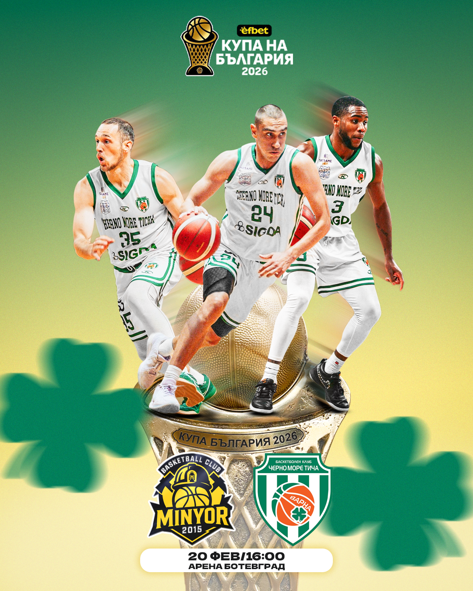
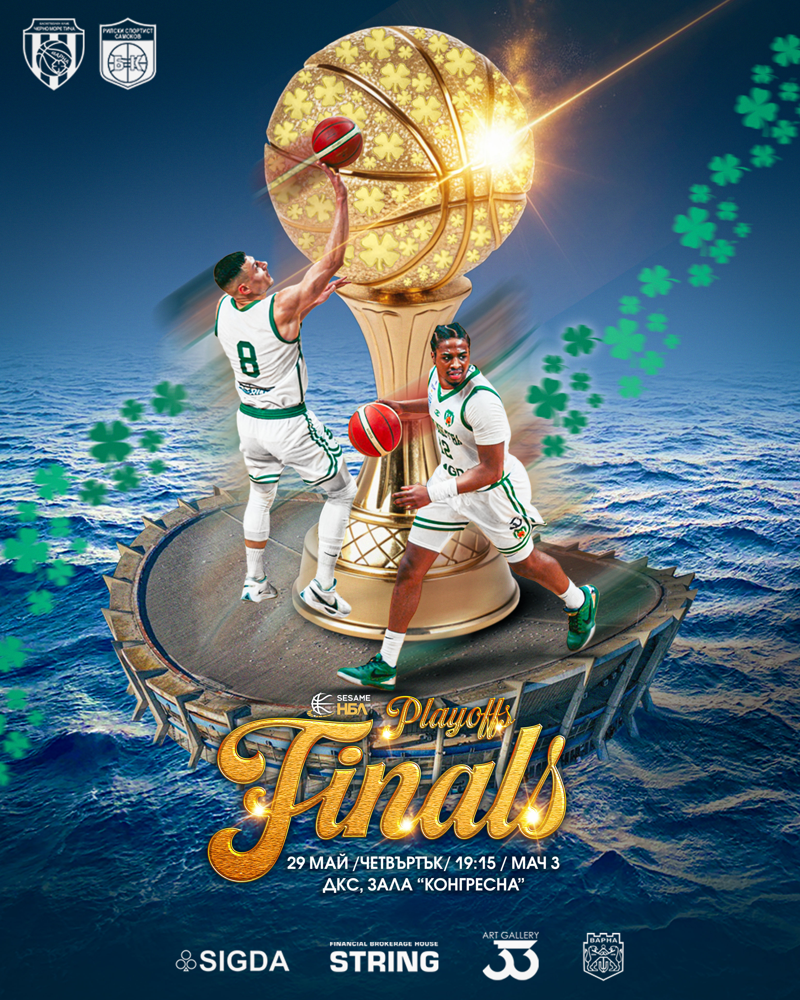
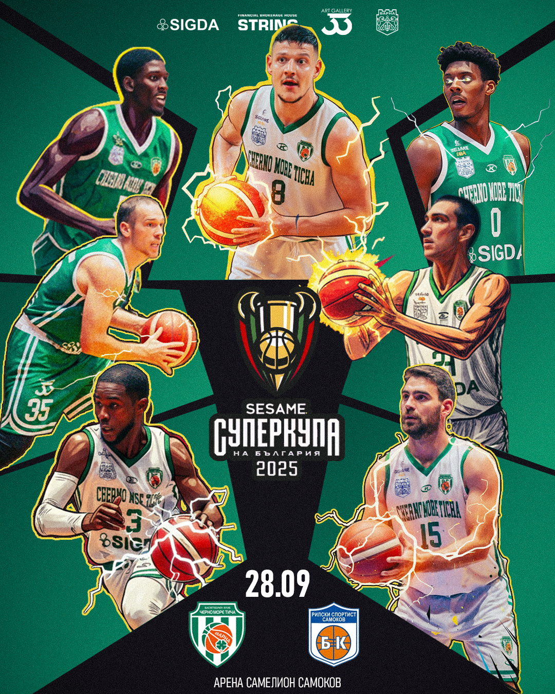
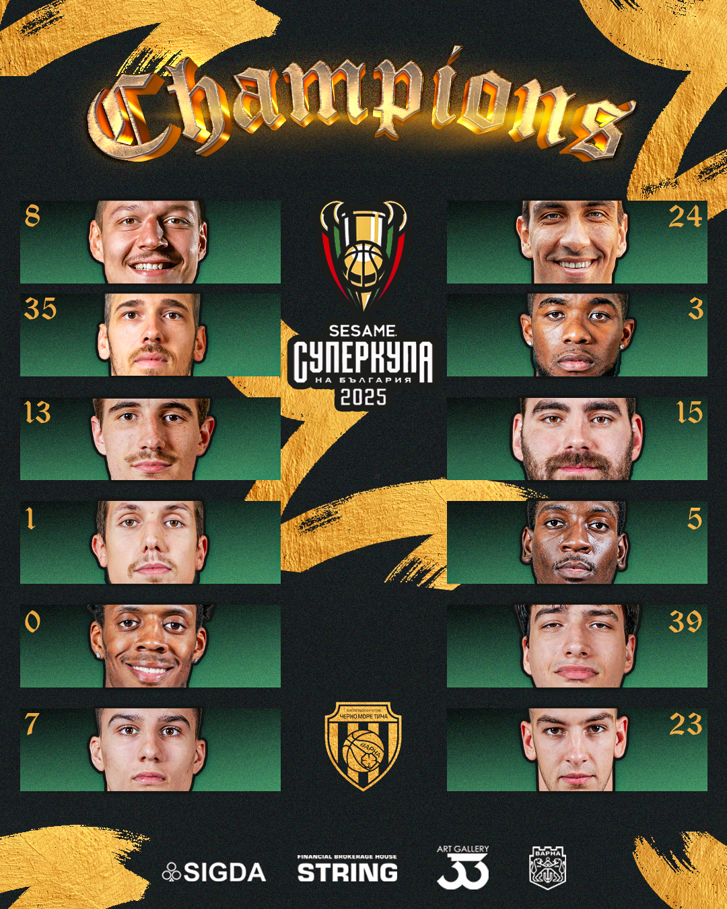
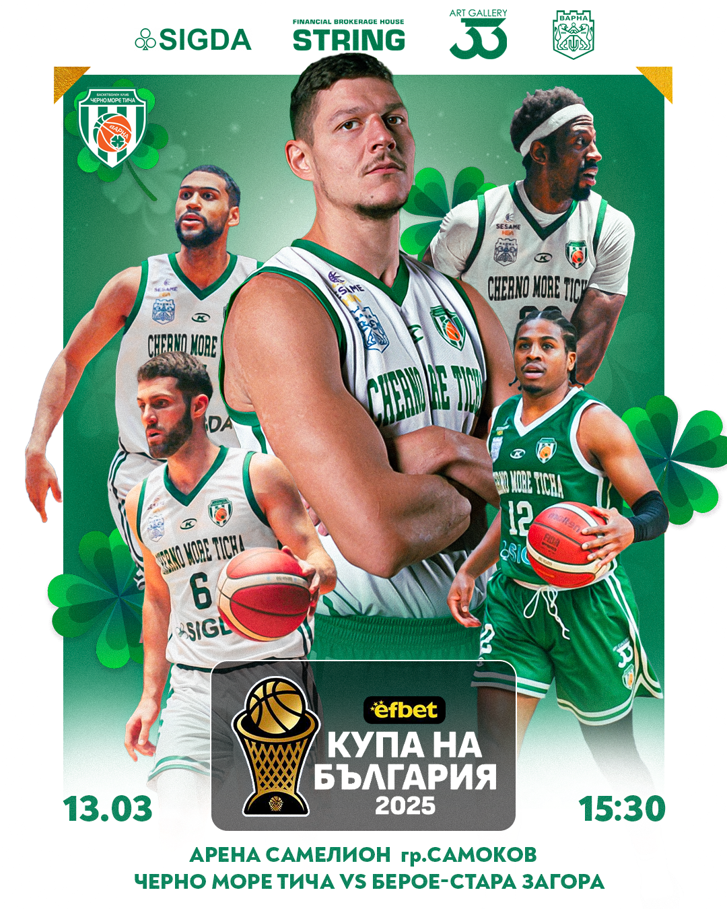
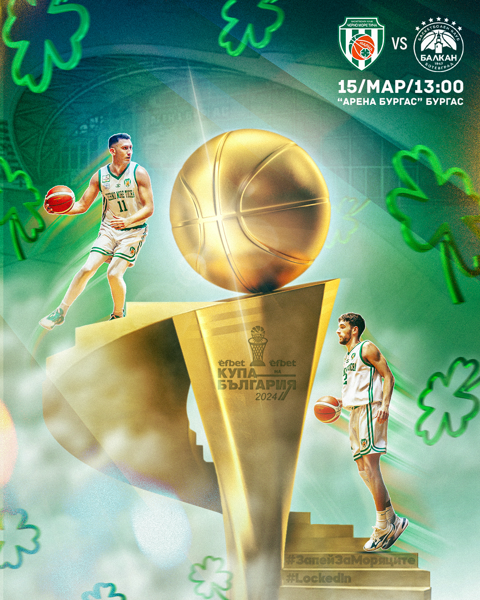